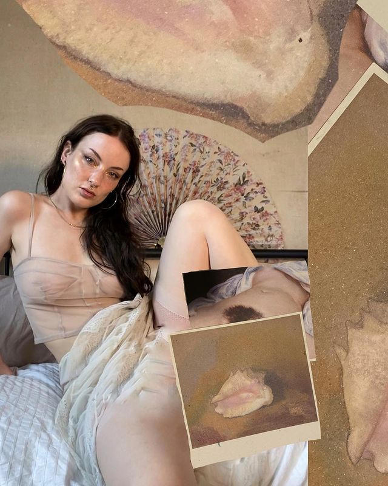
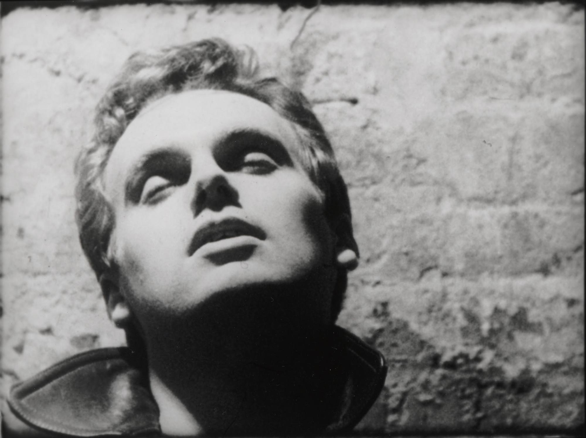
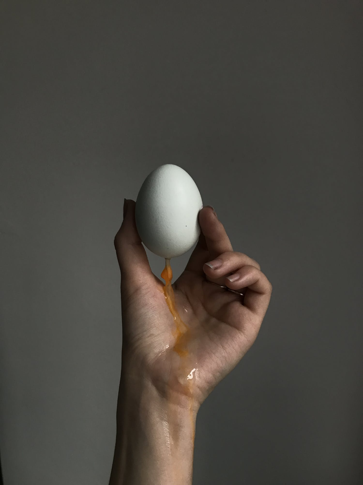

The Eye Moves In And Out Of The Body: Avant-garde
Aesthetics In Four Chambers’ Online Pornography
HK Jackson
Art Education, Concordia University
Even before Laura Mulvey first theorized about the power dynamics of the gaze in “Visual Pleasure and Narrative Cinema,” people have struggled with the uneasy mediation of cinematic mediums between the eye and the body. Too often, film theorists treat the gaze as a detached and purely intellectual apparatus of the body. This way of thinking ignores the visceral sensory effect in the body that comes with looking, as well as the way that representational technologies “convey their logic…through the manner in which they latently engage our bodies.” 1 No genre of film shows this phenomenon more clearly than the pornographic image, a “dense semantic site...which functions only in and through a direct visceral appeal to the body.” 2
The relationship between the gazed-upon body and the spectator (and their own body) was a core concept for the 1960s Western avant-garde in performance art and experimental cinema. In her essay on Andy Warhol’s erotically evasive film Blow Job, Ara Osterwell describes how “despite their shared investment in corporeality, pornography and the avant-garde are often positioned at odds.” 3 While part of this disparity comes from porn and experimental cinema’s vastly different formal vocabularies, I also believe that the extreme lack of critical attention given to pornography is directly correlated with larger societal devaluation of sexual labour, in both its products and its creators. Today’s porn market is moving continually away from centralized models of production, with more space for sex workers to produce their own content on their own terms. Four Chambers, a collective of porn producers and performers headed by British former art photographer Vex Ashley, is an example of what sort of creative possibilities are opening up in this decentralized market. By embedding art-historical concepts and avant-garde cinematic techniques into graphic depictions of bodies fucking, Four Chambers’ work attempts to dissolve the polarization of art and pornography into their shared pleasure in looking, while simultaneously exposing the ways a spectator’s perceptions of high and low taste are very much informed by the medium and market context wherein work is embedded.
Four Chambers’ work is featured exclusively on the collective’s website, A Four Chambered Heart, where full versions of its films are only accessible to viewers who are paid subscribers to the project on Patreon. Modelled after the painterly tradition of artistic ‘patronage,’ Patreon is an online crowdfunding platform that enables people to support an artist’s practice on an ongoing basis. In Four Chambers’ case, individual viewers pay nine dollars toward each video they make, in exchange for exclusive access to the full, explicit versions of the work. At the height of their success, the collective was receiving a total of $1,3796 per video from this platform. 4 This level of success in the highly saturated internet porn market has been established almost entirely through Four Chambers’ and Ashley’s own formidable social media presence, concentrated in the image-oriented platforms of Tumblr and Instagram. 5 There, soft-lit, highly stylized, and filtered images of silky bodies dominate, with crescent moon forms artfully concealing errant nipples and bushes (fig. 1).

Fig. 1. Ashley, Vex. “Play with fire.” Instagram, September 20, 2020.
This strategic tease— stunningly beautiful, mysterious images coupled with the total exclusivity of content –– has led to the creation of a kind of mythos surrounding the work. In the past several years, Four Chambers has gathered quite a bit of attention in the mainstream press, turning Ashley into somewhat of a symbolic figurehead in the ongoing dialogue around “feminist,” “ethical,” or “aesthetic” pornography. An article for ELLE Magazine begins by stating that “it's easy to see why [Ashley]...is often labelled a ‘tasteful’ porn star.” 6 There is an unmistakable polish and sophistication in their films, harkening more to the world of high-art cinema than to the hard-core aesthetic many associate with the term “pornography.” Ashley described the style to Dazed Magazine as “magical realism porn,” chalking the literary theory, art history and fiction references up to “the curse of art school.” 7 The aesthetic in Four Chambers’ work does overtly reference a vast array of visual media, with influences ranging from Caravaggio to David Cronenberg to Carolee Schneemann. 8 Schneemann in particular makes for an interesting comparison, as she too worked as both the directing eye and the performing body in her images, though on the opposing side of the art-pornography divide.
Between 1964 and 1967, visual artist Carolee Schneemann was experimenting with how to transfer her practice from abstract painting to other media, and decided to make her own erotic film, Fuses. She felt that “no one had dealt with the images of lovemaking as a core of spontaneous gesture and movement,” 9 and considered the exploration of sexual images from a distinctly feminine subjectivity as a great opportunity. Schneemann shot the film herself with her partner James Tenney, partly to investigate whether or not “a nude woman artist [could] be both image and image maker.” 10 For someone hoping to get a clear view of the sexual action, however, Fuses is a disorienting experience. The filmstrips are tinted vivid teal, magenta, and amber hues, with heavy layers of collage muddying the image underneath. Though Schneemann originally screened the film in progress to fellow artists in New York, she was often met with antagonistic responses to the work, with some of her peers dismissing it as “narcissistic exhibitionism.” 11 It seemed that at the time, the project was too pornographic for the experimental film scene, yet it was also too boring for those hoping to “get off.” So much of Fuses revolves around fragmentation: Schneemann says she wanted the viewer to “get lost in the frame— to move the body in and out of its own frame, to move the eye in and out of the body so it could see everything it wanted to.” 12 This method stands in direct contrast to hard-core pornography’s stylistic insistence on “the genital event as the norm of sexuality, within a time frame that avoids unnecessarily lingering over ‘irrelevant’ spaces of the body.” 13
Andy Warhol’s Blow Job, created in 1963 just before Fuses, takes this “irrelevant” lingering to its logical conclusion by eliminating the genital image entirely. In twenty-seven minutes of complete silence, the film remains on a steady close-up of an anonymous man’s face, who is ostensibly responding to the action described in the film’s title (fig. 2). Left without sound and with only a short fragment of the body, the man’s frequent lurches, sighs, and pouts are “situated in an illegible visual lexicon where meaning has become inaccessible.” 14 By choosing to light his face from above, turning his face hollow and skull-like, Warhol “succeeds in making the representation of the sexual act strange.” 15 Like Schneemann, Warhol screened the film primarily to other New York artists, but strategically presented it for the first time in the cultural sanctity of an art gallery, to dedicate the piece to the high-art canon, rather than the midnight peep show crowd. Although experimental filmmakers were interested in putting sexual content into their works, they remained afraid of contaminating their art with pornography and its associated social stigma. This fear remains relevant today, allowing an interesting dynamic to arise: if art has everything to lose by becoming pornographic, what does pornography have to gain by becoming artistic?

Fig. 2. Andy Warhol, Blow Job, 1963, film still, Andy Warhol Museum,
Pittsburgh.
In “The Metaphor of the Eye,” Roland Barthes critically analyzes French surrealist Georges Bataille’s famed work of pornographic fiction The Story of the Eye, stating that, “there is nothing more limited than erotic material. Yet they are sufficiently numerous to lend themselves’ to apparently infinite combinations.” 16 The limitation inherent in dealing exclusively with sexual content is something that Bataille attempts to subvert through a chain of linking and overlapping metaphors that run undercurrent to the rapidly escalating sexual perversions of the central characters within the novella. Its central motif, the eye, is transformed into different objects in a globular relationship to it: the egg, the sun, and the testicles. 17 From this circle of metaphors, “a second chain springs from it, made up of all the avatars of liquid.” 18 By then blurring together these metaphors with uneasy phrases like “urinary liquefaction of the sky,” 19 the author succeeds in once again making sex appear strange.
In Four Chambers’ own interpretation of Bataille’s book, a film simply titled The Eye, Vex Ashley creates a nonlinear narrative that incorporates many objects from Bataille’s metaphoric chain, while using techniques particular to avant-garde filmmakers such as Schneemann and Warhol. The film opens with a shifting narrow viewpoint that mobilizes both the eye of the viewer and the one pictured. Almost every shot is staged in close-up, focusing on the performers watching each other, well, perform (fig. 3). There is a slow shot of a hand crackling an eggshell, of liquid dripping down a foot, milk flowing in reverse off of a man’s face up to between Ashley’s legs (fig. 4).
Fig. 3. Four Chambers, The Eye, 2015, film still.

Fig. 4. Four Chambers. “Birthing.” Venus Apex.
In fragmenting the images of the body in a way that parallels Fuses and Blow Job, the explicit image is removed from its natural context to become an abstraction. Conceptually, the work reads as well conceived as your typical graduate thesis project, and by bringing in industry giant Stoya as a performer, it becomes far more profitable. But in what world would it be considered “tasteful”?
The more I compared ELLE Magazine’s discussion of Four Chambers’ work to the art itself, the more I wondered if we were looking at the same thing. Had the film been presented in a gallery context, it would have been seen as fetishistic, perverse, and preceded by many layers of content warnings, but it would have also opened the work up to the possibility of deeper subtextual analysis than the internet porn market will afford it now. It is astounding how arbitrarily people will label these kind of works as either “good,” “ethical,” and “feminist” or “bad,” “evil,” and “corrupt” as though its designation as porn somehow flattens all of its complexities into a division of “low art” and “aspirational high art.”
The internet and social media have brought about a period of unprecedented growth in pornography that is directed, performed and produced by sex workers themselves. The ingenuity, resourcefulness, and nerve evident in pornographers such as Vex Ashley can be recognized as fulfilling Schneemann’s dream of the artist as both image and image-maker, yet their work remains on the margins of the art world due to pervasive forces of misrepresentation, censorship, and stigma. Throughout history, sex workers have been caught in this uneasy mediation: torn between catering to the visual pleasure of their audiences and maintaining a sense of agency in a world that stigmatizes and dismisses their work. Sex workers deserve a deeper level of inclusion in the discourse around sexuality in art, and if things continue the way artists like Four Chambers have indicated, are going to continue to demand it.
AUTHOR'S NOTE
This paper was first written in 2016, and in many ways, it reflects an
era of sex worker-led online community that is now rapidly disappearing
due to new laws and corporate policy restricting sexual content on the
internet. FOSTA and SESTA are pieces of American legislation, enacted in
2018, that criminalize all websites that host content that can be
interpreted as facilitating sex work. This includes advertising
platforms, many forms of adult content, and even sex worker community
support spaces on social media.
Because major websites that host user-created content are the most
targeted by FOSTA/SESTA, it has started a wave of companies censoring
their own users through restrictive terms of service that essentially
ban sex workers from their platforms. Since this essay was written, Four
Chambers has been banned and erased from sites like Patreon and Tumblr.
The collective was forced to create their own structures for
subscription and hosting content, but it still survives today, likely
thanks to their large following and their perception by many as being
“not-like-other-pornographers.” Due to the COVID-19 pandemic, many sex
workers have been forced to shift their work online, where they now face
increasing restrictions from social media sites, website hosting
platforms, and online banking providers like PayPal.
It is arguably more important than ever for audiences to be critical of
reductive analyses of sexual media. As artists and audiences who harbour
an investment in the ethics of sexual labour and expression, it is
important for us to foreground the experiences of sex workers who are
currently most affected by this censorship, and stand in solidarity with
their struggle against the state and corporations that undermine our
right to a free and safe Internet for all.
NOTES
[1] Zabet Patterson, “Going On-line: Consuming Pornography in the Digital
Era,” in Porn Studies, ed. Linda Williams (Durkham: Duke UP, 2004),
107.
[2] Ibid., 106.
[3] Ara Osterweil, “Andy Warhol’s Blow Job: Toward the Recognition of a
Pornographic Avant-garde,” in Porn Studies, ed. Linda Williams
(Durkham:
Duke UP, 2004), 433.
[4] “Four Chambers,” Patreon, accessed April 1, 2016,
https://www.patreon.com/afourchamberedheart
[5] See https://www.instagram.com/vextape/
and
https://www.instagram.com/fourchambers/
[6] Olivia Fleming, “This 25-Year-Old Cam Girl Is Trying to Change the Porn
Industry,” ELLE Magazine,
https://www.elle.com/life-love/sex-relationships/news/a25682/cam-girl-trying-to-change-the-porn-industry/.
[7] Gareth May, “The Art School Student Making Porn Avant-garde,” Dazed
and
Confused Magazine,
https://www.dazeddigital.com/article/30200/1/the-fine-art-student-making-porn-avant-garde.
[8] Thomas Deslogis, “Le Porno Arty Du Collectif Four Chambers,” Les
Inrocks,
https://www.lesinrocks.com/2015/09/15/sexe/sexe/le-porno-arty-du-collectif-four-chambers/.
[9] Carolee Schneemann, Carolee Schneemann: Imaging Her Erotics: Essays,
Interviews, Projects, 45.
[10] Ibid., 28.
[11] Ibid., 26.
[12] Ibid., 42.
[13] Ara Osterweil, “Andy Warhol’s Blow Job: Toward the Recognition of a
Pornographic Avant-garde,” in Porn Studies, ed. Linda Williams (Durkham:
Duke UP, 2004), 442.
[14] Ibid., 436.
[15] Ibid., 448.
[16] Roland Barthes, “The Metaphor of the Eye,” in Critical Essays
(Evanston: Northwestern UP, 1972), 241.
[17] Ibid., 241.
[18] Ibid., 242.
[19] Georges Bataille, The Story of the Eye, (London: Marion Boyars
Publishers, 1928), 24.